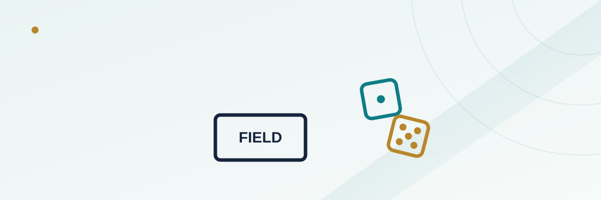

Craps Field Bet Explained: The One-Roll Bet With Three Different House Edges

Of all the bets spread across a craps table, the Field is probably the easiest one for a new player to understand on sight: it covers seven of the eleven possible dice totals, it resolves on the very next roll, and the betting box is usually the biggest, most obviously labeled rectangle on the whole layout. What's not obvious just by looking at it is that two casinos can both call their bet "the Field" and be offering noticeably different house edges — sometimes double one another — because of one small detail printed in the corners of the box.
In this guide
What the Field bet actually covers
The Field is a one-roll wager you can make, change, or remove on any roll — there's no come-out roll requirement and no point needed first, which is part of why it looks so approachable. You're betting that the very next roll of the dice will land on 2, 3, 4, 9, 10, 11, or 12. Land on 5, 6, 7, or 8 instead, and the bet loses. That's seven winning numbers against four losing ones, which sounds like good odds until you remember that dice totals aren't evenly likely — some numbers come up far more often than others because there are more ways to roll them.
Counting the combinations
Two six-sided dice produce 36 equally likely combinations in total. The seven numbers the Field bet covers add up to 16 of those 36 combinations: one way to roll a 2 (1-1), two ways to roll a 3, three ways to roll a 4, four ways to roll a 9, three ways to roll a 10, two ways to roll an 11, and one way to roll a 12. The four losing numbers — 5, 6, 7, and 8 — account for the other 20 combinations, because 7 alone has six different ways to appear and 6 and 8 each have five. So despite covering more individual numbers, the Field bet actually covers fewer total combinations than it doesn't: 16 winning rolls against 20 losing ones.
Why 2 and 12 get a bonus payout
Because 2 and 12 are each the single hardest individual numbers to roll — just one combination apiece, compared to four ways to roll a 9 or three ways to roll a 4 — casinos pay a bonus on those two specific outcomes to make the bet look more appealing without actually closing the structural gap between 16 winning combinations and 20 losing ones. Every other winning number on the Field pays even money (1 to 1): bet $10, win $10. Land a 2 or a 12, though, and most tables pay double (2 to 1) on at least one of them, and some pay triple (3 to 1) specifically on the 12. That bonus is the entire reason the bet isn't dramatically worse than it already is — without it, the plain math of 16 wins against 20 losses would leave an even uglier edge.
The three common pay tables, and the edge behind each
Not every casino pays the 2-and-12 bonus the same way, and the differences matter more than they look on the layout:
Double on both 2 and 12 (2 to 1 each). This is the most common version, especially at smaller or more casual tables. Working through the full payout across all 36 combinations — double pay on the two single-combination numbers, even money on the rest, and a loss on the 20 combinations that don't hit — comes out to a house edge of 5.56%, one of the steeper edges on the entire craps table for a bet this simple to understand.
Triple on 12, double on 2 (3 to 1 and 2 to 1). A meaningfully better version found at many Strip-style and higher-limit tables. Adding one extra unit of payout specifically on the rarest outcome cuts the house edge roughly in half, down to about 2.78% — still worse than a Pass Line bet, but no longer in the same range as the worst bets on the table.
Triple on both 2 and 12 (3 to 1 each). The rarest and most player-favorable version, occasionally offered as a promotional table rule. This version actually closes the gap to a mathematically even bet with a 0% house edge — genuinely rare to find, and worth seeking out specifically if you enjoy playing the Field regularly.
A worked example
Picture a player making a flat $10 Field bet on 36 consecutive rolls — purely as a thought experiment, since real results bounce around far more than this — under the "double 2, double 12" pay table. Across those 36 rolls, the dice would be expected to land on a losing number (5, 6, 7, or 8) 20 times, for a total loss of $200. The remaining 16 rolls land on a winning Field number: 14 of those pay even money ($10 each, or $140 total), and the two rarest outcomes — one 2 and one 12 — each pay double ($20 each, or $40 total). Total returned: $180. Total wagered: $360. Net result: a $20 loss on $360 in action, which works out to exactly the 5.56% edge the math predicts. Switch to the "triple 12, double 2" table and that same stretch of rolls returns $190 instead of $180, cutting the loss to $10 — the same dice outcomes, a meaningfully different result, purely because of which pay table was posted.
Pay tables compared
| Pay table | Payout on 2 | Payout on 12 | House edge |
|---|---|---|---|
| Standard (most common) | 2 to 1 | 2 to 1 | 5.56% |
| Strip-style / higher limit | 2 to 1 | 3 to 1 | 2.78% |
| Promotional / rare | 3 to 1 | 3 to 1 | 0.00% |
How to spot which table you're playing
The payout is almost always printed directly inside the Field box on the felt, usually right on top of the "2" and "12" markers at either end of the betting area — look for small print reading "2 to 1" or "3 to 1" next to each number rather than assuming. If nothing is printed, ask the dealer before betting; it's a completely normal question and dealers answer it constantly, since the layout print can be worn down or hard to read under casino lighting. If you're choosing between two otherwise similar tables and plan to bet the Field at all, the pay table difference is worth walking across the room for — the gap between 5.56% and 2.78% compounds meaningfully over a session.
Common misconceptions
A common misread is thinking the Field is a good bet because it "covers more numbers than it doesn't" — seven numbers against four sounds favorable until you count combinations instead of numbers, at which point the bet flips to covering fewer winning outcomes than losing ones. Another misconception is assuming all Field bets pay the same; plenty of players bet it for years without ever checking which of the three common pay tables they're actually playing. A third mistake is treating the bet as a way to "insure" a Pass Line wager against a seven — the Field actually loses on a 7 just like the Pass Line does after a point is established, so it offers no real hedge against the number that ends more rolls than any other.
Frequently asked questions
Is the Field bet always a bad bet?
It depends entirely on the pay table. A standard double-double table carries a steep 5.56% edge, but a triple-12 table cuts that roughly in half, and a rare triple-triple table is mathematically even. Always check the posted payout before assuming.
Why does the Field bet cover seven numbers but still have a high house edge?
Because dice totals aren't equally likely. The seven numbers the Field covers only add up to 16 of the 36 possible dice combinations, while the four numbers it doesn't cover account for the other 20, led by 7's six combinations.
Can I change or remove a Field bet mid-roll?
Yes — it's a one-roll bet with no point requirement, so you can bet it, skip it, or adjust the amount on any roll of the game without being locked in the way some other craps bets require.
Does the Field bet protect against a seven-out?
No. A roll of 7 is a loss on the Field bet, the same as it's a loss on an established Pass Line point, so it doesn't hedge against the most common dice outcome.
How do I know which pay table a table is using?
Check the printed payout next to the 2 and 12 markers inside the Field box on the felt, or simply ask the dealer before betting — it's a routine question at any table.